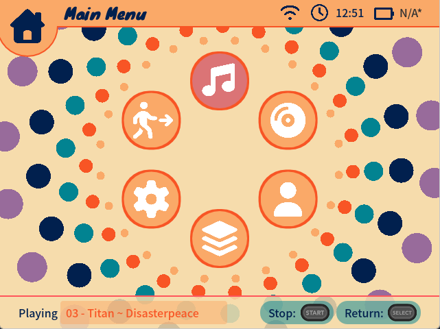
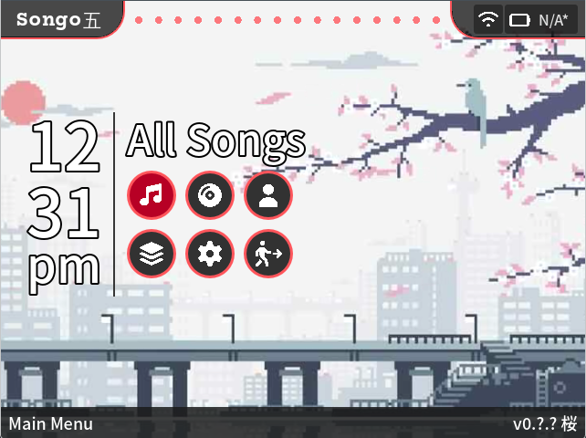
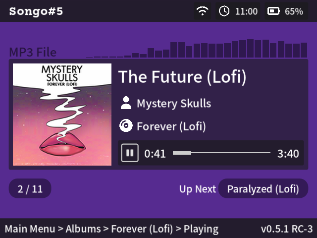
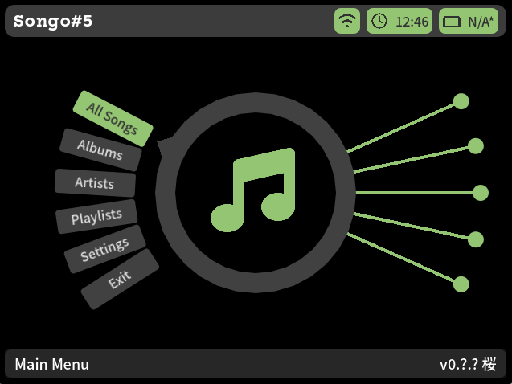
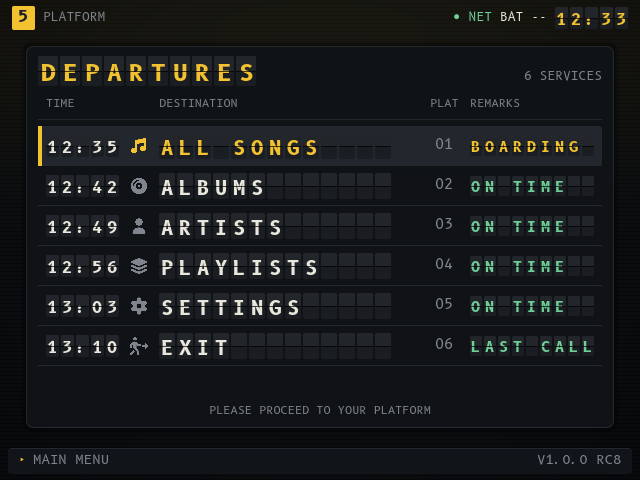
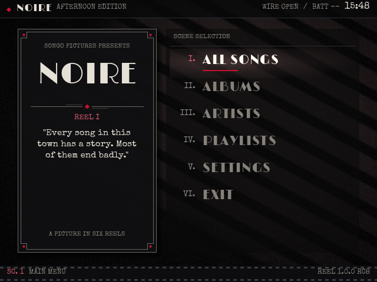
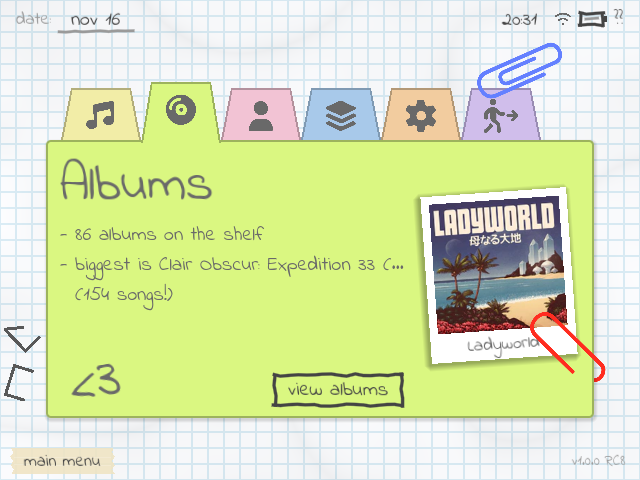
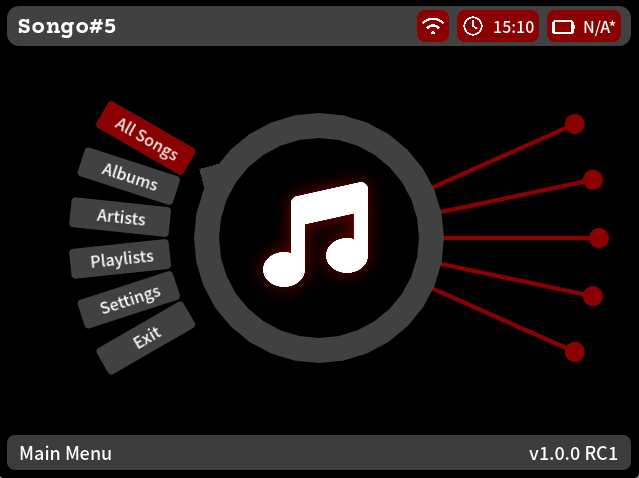

Ringing
v0.3A bubbly colorful interface that makes you forget the pain
Included in Songo

A bubbly colorful interface that makes you forget the pain
Included in Songo

Similar layout to Songo Classic with a chill animated pixel background
Included in Songo

Original Songo#5 theme, based on minimalism and being user friendly.
Included in Songo

A dark minimal UI with accents of color to liven it up a bit
Included in Songo

A split-flap station board. Your library leaves on time; songs play as boarding passes.

A rainy night in a black and white picture. Your library is the case file; every song burns down like the last cigarette.

A hand drawn lookin thing

A dark minimal UI with accents of color to liven it up a bit
No themes match these filters.
songo_themes folder next to Songo, or up to three folders above it.
On PortMaster that's ports/songo5/songo_themes/.external_themes folder:
~/.local/share/godot/app_userdata/Songo #5/external_themes/ on Linux,
%APPDATA%\Godot\app_userdata\Songo #5\external_themes\ on Windows.The source download is the theme's editable folder. To change a theme, unzip it into
theme_dev/themes_raw/ in a Songo-5 checkout and open the project in the Godot editor.